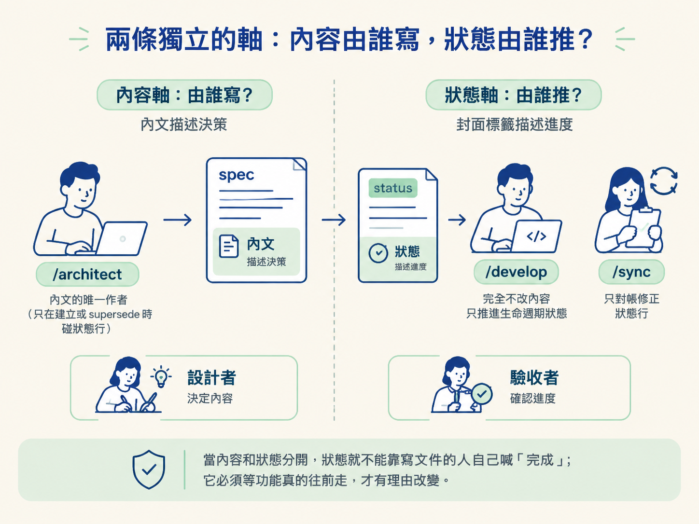
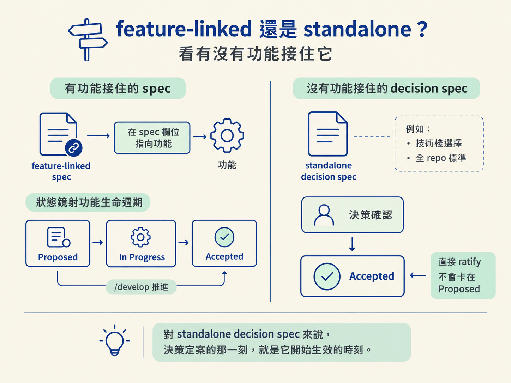

學完這一節，你應該能說出五種 spec 狀態各自代表什麼、由誰負責推進，也能分辨 feature-linked spec 與 standalone decision spec。
上一節我們看過 /architect 的四種設計模式與操作。現在，假設你手上有一份剛寫好的 spec，開頭標著 Status: Proposed。幾天後再打開，它變成了 In Progress；功能做完，又變成 Accepted。
你沒有再次執行 /architect，狀態卻自己往前走了。到底是誰改的？
答案是這套系統最重要、也最容易搞混的分工：寫 spec 內容的人，和推進 spec 狀態的人，刻意不是同一個。如果把兩者混在一起，就會出現兩種無聲的錯誤：spec 寫得很完整，狀態卻永遠卡在 Proposed；或者功能根本還沒蓋完，就有人自己蓋章成 Accepted。
一份 spec 的狀態，通常鏡射它所屬功能的生命週期；另外再加上被取代與暫定假設這兩種情況。可以把它想成一張工程文件的進度標籤：
| 狀態 | 意思 | 誰設定 |
|---|---|---|
Proposed | spec 已經寫好，決策也談妥，但功能還沒開始建置 | /architect 建立時設定 |
In Progress | 這份 spec 所管理的功能正在建置 | /develop 將功能轉為 in-progress 時設定 |
Accepted | 功能已經完成並通過驗證，可以蓋章結案 | /develop 完成時設定，或由 /sync 對帳 |
Superseded by NNNN | 這份 spec 已被編號為 NNNN 的新版 spec 取代 | /architect 執行 supersede 時設定 |
Assumed | 先建置、後補正式決策的暫定假設 | 只有 /develop 會建立 |
其中最容易誤判的是 Accepted。它不是「工程師覺得這個設計不錯」，而是「功能已經蓋好，而且通過驗證」。你確認 spec 內容沒有問題，只代表內容可以定稿；功能還沒建置，就不能因此標成 Accepted。
/architect 和 /develop 都會接觸同一份 spec，但兩者負責的不是同一件事。可以把 spec 想成一份文件，分成「內文」和「封面標籤」兩層：內文描述決策，標籤描述它目前走到哪裡。
| spec 內容 | spec 狀態行 | |
|---|---|---|
/architect | 唯一作者，負責讀取命令、寫下決策內容 | 只在建立 spec 時設定初值，或在 supersede 時更新 |
/develop | 完全不修改，只依照內容建置 | 負責讓生命週期往前推進 |
/sync | 完全不修改內容 | 只負責對帳與修正狀態行 |
最重要的規則可以濃縮成一句話：只有 /architect 寫 spec 內容，只有 /develop 推進功能生命週期的狀態。
拆開的理由是避免同一個角色同時當設計者和驗收者，不是為了多跑幾道流程。否則，一份還沒討論完的 spec 可能被直接標成 Accepted，讓「決策 → 建置 → 驗證」這條鏈失去意義。
當內容和狀態分開，狀態就不能靠寫文件的人自己喊「完成」；它必須等功能真的往前走，才有理由改變。

Assumed 是其中的特殊情況。它只能由 /architect 清除，因為清除它代表原本的暫定假設已經補上一場正式的決策討論。清除它，等於要把原本欠的那場決策討論補回來，不是單純改個標籤。
同樣是 spec，狀態的走法可能完全不同。判準只有一個：是否有一個可建置的 scope 功能，在它的 spec 欄位指向這份 spec？
| 種類 | 長什麼樣 | 狀態怎麼走 |
|---|---|---|
| feature-linked | docs/scope/ 中有一列功能，其 spec 欄位指向這份 spec | 鏡射功能生命週期：Proposed → In Progress → Accepted，由 /develop 推進 |
| standalone decision | 沒有任何功能 row 指向它，例如技術棧選擇或全 repo 標準 | 寫完時是 Proposed，工程師確認決策後直接成為 Accepted |
為什麼需要兩套規則？因為「選用哪個資料庫」這類決策，沒有一個對應的功能可以被建置和驗收。如果也要求它等待 /develop 推進，就會永遠停在 Proposed：根本沒有功能會替它進入 in-progress。
所以 standalone decision spec 只要決策一確認，就能直接 ratify 成 Accepted。對這類文件來說，決策定案就是它開始生效的時刻。

有些 spec 從建立那一刻起，就是 Accepted。情況是：它記錄的不是未來要做的決策，而是一件已經完成的事。
例如工程師說：「我們已經使用 Postgres 了，幫我把這個決定記下來。」這份文件描述的是既存事實，沒有「尚未建置」的階段，因此可以跳過 Proposed，直接寫成 Accepted。
同樣地，如果連動的 scope 功能原本就標記為 existing，代表它在這套工作流出現以前就已經上線，也適用這項規則。
Assumed：先上車，之後補票實務上，有時候現在不做決定就無法繼續建置，但又沒有時間進行完整討論。這時，/develop 可以建立一份狀態為 Assumed 的 spec，先把本次建置採用的假設記錄下來。
這讓功能可以繼續往前走，但也留下清楚的欠條。Assumed 有兩個關鍵性質：
done。功能不必等決策補完才能結案。不過，這張欠條不會自動消失。只有 /architect 能清除 Assumed：它必須把原本的假設帶回正式討論，確認假設成立，或決定改採其他方案。
spec 的狀態鏡射功能生命週期：Proposed（寫好、尚未建置）→In Progress（建置中）→Accepted（完成並驗證），另外還有被取代的Superseded，以及先建後決的Assumed。規則是：只有/architect寫內容，只有/develop推進狀態，只有/architect清除Assumed。有 scope 功能連動的 spec 會鏡射功能生命週期；純決策 spec 在確認後直接成為Accepted；記錄既成事實的 spec 則可以出生就是Accepted。
現在可以把 spec 放回正確的位置：它是連接「決策」與「功能生命週期」的狀態記錄，不是寫完就定住不動的文件。下一個問題是，/architect 要怎麼把模糊的題目問成足以支撐這些狀態的完整內容？關鍵在於，它必須先分辨哪些問題該問、哪些可以推導，以及哪些應該自己查清楚。下一節就來拆開這套分類法。